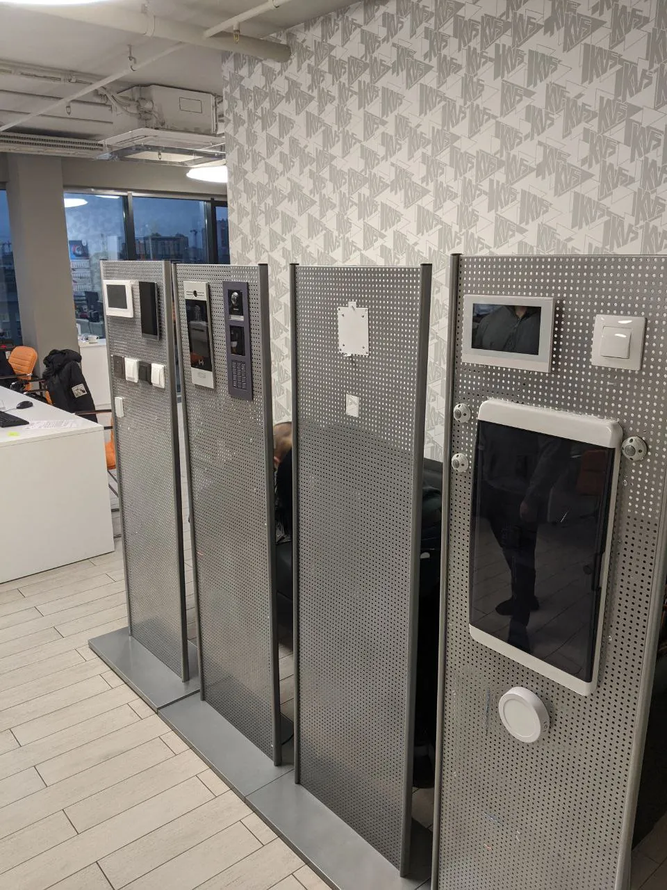

Butler
Облачная экосистема для управления домом в современных жилых комплексах


Квартиры
17 011
с домофонами Butler в 27 ЖК
Пользователи
≈25 000
активных в месяц во всех ЖК
Застройщики
8
ставили Butler в свои ЖК
Контекст и задача
Управление домом в одном месте
ITFrog делает облачные решения для IP-домофонии. Её экосистема Butler для новостроек объединяет домофон с экраном в каждой квартире, мобильное приложение жильца, админ-панель управляющей компании и информационные панели в парадных. Застройщик покупает Butler для своего ЖК и передаёт его жильцам вместе с квартирой. Это white-label продукт, в приложении и на домофоне стоит бренд застройщика.
Застройщики привлекают покупателей удобствами. Закрытая охраняемая территория, двор без машин, быстрый вызов мастера через управляющую компанию.
Для этого в ЖК ставят системы разных производителей. Контроль доступа, видеонаблюдение, учёт счётчиков и умный дом друг с другом не связаны, и у каждой своё приложение. В итоге свет, датчики и звонок диспетчеру у жильца в разных приложениях.
Задачей Butler было связать эти системы, чтобы всеми удобствами ЖК жилец пользовался с домофона в квартире или из одного приложения в телефоне. При этом все ЖК разные, у каждого свой набор функций.
Что спроектировал
Одна система для жильца и управляющей компании
Пришёл в ITFrog в 2019 году, когда Butler только складывался в нынешнем виде, и спроектировал все его интерфейсы. Первыми были домофон и админ-панель, чуть позже появилось приложение. Структура у всех устройств одна, отличается только набор функций.
Домофон стоит в каждой квартире. С него отвечают на звонки с вызывной панели и открывают дверь, на нём читают сообщения УК и смотрят счётчики, если они подключены.
Телефон повторяет домофон, где бы жилец ни был, дома или в отъезде. Звонок с вызывной панели приходит в приложение, и жилец открывает дверь гостю или курьеру. Открыть дверь можно и без звонка. Вместо ключа или карты собственник квартиры может включить в приложении Bluetooth-ключ, и дверь откроется сама, когда он подойдёт к ней.
Гостю можно заранее отправить временный код в СМС или мессенджере. Тот наберёт его на вызывной панели и дойдёт до квартиры без звонка. Срок действия кода жилец выбирает в приложении в пределах, которые задал застройщик. Гостя можно выбрать из контактов, а код подписать, чтобы помнить, кому он выдан.
Счётчики и датчики жилец добавляет в приложение сам. Если датчик сработал, приложение сразу пришлёт уведомление.
Управляющая компания работает в админ-панели. Через неё диспетчеры и консьержи принимают заявки и пропуска жильцов, отвечают на них, рассылают уведомления в приложение и на панели в парадных. Там же УК распределяет роли сотрудников, а застройщик может вести в одной панели несколько своих ЖК.
Жилец видит в приложении только то, что есть в его доме. Экраны в кейсе пересобраны под нейтральный бренд.
Обратная связь
Жильцам важнее всего отвечать на звонки и смотреть камеры
Первые ЖК получили интерфейс, собранный вокруг функций, которые заказал застройщик. Пока дом не сдан, жильцов в нём нет, поэтому обратную связь собирал в заселённых ЖК.
- Логи домофонов.
- Аналитика приложения.
- Заявки жильцов в УК.
- Опросы в группах ЖК в соцсетях.
- Разговоры с жильцами и УК в ЖК, около 20 за всё время.
Главные выводы давали логи и аналитика. По ним видно, что жильцы чаще всего отвечали на звонки с вызывной панели и смотрели камеры, остальное шло дополнением.
Жалобы были в основном на техническую часть. Камера не показывала, дверь не открывалась. Интерфейс жильцы ругали редко, поэтому его не перестраивали целиком, а дорабатывали точечно, там, где данные и жалобы показывали неудобство.
Управляющие компании просили разгрузить диспетчеров. Много звонков было про вызов специалистов и пропуска на машину.
Доработки
Интерфейс дорабатывали под то, чем жильцы пользуются
Эти доработки сделали по обратной связи и потом переносили в следующие ЖК.
Камеры в панели навигации. В первой версии камеры домофона были спрятаны в меню, хотя по статистике их смотрели очень часто. Камеры стоят у каждой вызывной панели, на паркинге, на детской площадке и во дворе. Вынес их в панель навигации домофона, в приложении они тоже стали отдельным пунктом.
Камеры
Просмотр
Куда приходит звонок, выбирает жилец. Одни отвечали только с телефона, другие пользовались обоими устройствами. Поэтому звонок можно направить на домофон, на телефон или на оба сразу.
Режим «Не беспокоить» вместо выключенного звука. Громкость домофона можно было убавить или полностью выключить звук. В заявках жильцы писали о двух проблемах. Днём, пока спят дети, звук выключали, потом забывали включить и пропускали звонки. А ночью будили случайные вызовы, когда кто-то ошибался квартирой.
Добавил режим «Не беспокоить». Жилец включает его на главном экране домофона и выбирает срок. Пока режим включён, домофон не принимает вызовы. Если звонок настроен и на телефон, он сразу уходит в приложение, если нет, звонка не будет. Потом домофон возвращается в обычное состояние, а пропущенные вызовы видны в истории.
01 / 04
Пропуск на машину без звонка диспетчеру. Во многих новых ЖК двор без машин. Чтобы впустить во двор машину, например с мебелью, жилец звонил диспетчеру, а тот мог быть занят или не на месте. Вынес пропуск в отдельную заявку в приложении, с номером машины и временем. Заявку видят все диспетчеры УК, и её разберёт тот, кто на месте. При отказе причина видна в заявке.
Запуск и результат
Новый ЖК получал проверенный набор функций
Перед установкой каждый домофон проверяли на тестовом стенде, потом обновления приходили удалённо. При заселении УК выдавала жильцу доступ к приложению.



Набор функций для нового ЖК предлагали по статистике прошлых комплексов. Если застройщик хотел иначе, показывали ему эти данные.
Застройщики возвращались с новыми комплексами. Восемь застройщиков поставили Butler в 27 ЖК, домофоны стоят в 17 011 квартирах, а активных пользователей около 25 000 в месяц.